The Inn Way to the Yorkshire Dales
Day 1: Grassington to Buckden
Home **
Next Day
The Inn Way passes 26 pubs, and almost all of
them had a sign in front proclaiming themselves to be one of the 26.
There were three in Grassington, to start us on our way.
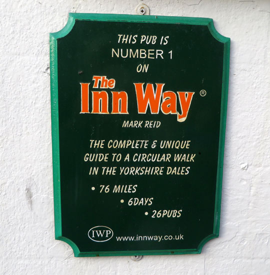
On leaving Grassington we were immediately in typically
outstanding Dales scenery.
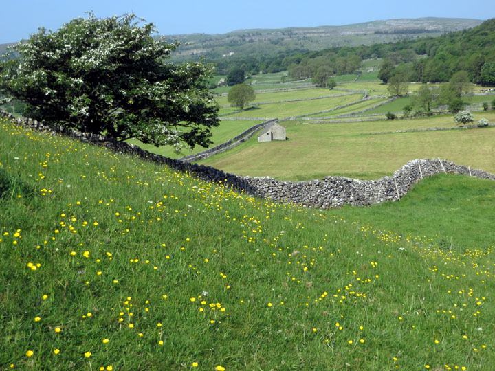
There were limestone pavements
as we neared Grass Wood.
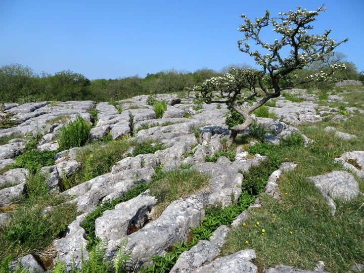
For a long time we could see
Kilnsey Crag in the distance. As we dropped down into Conistone, the rock
face was clearly
in view.
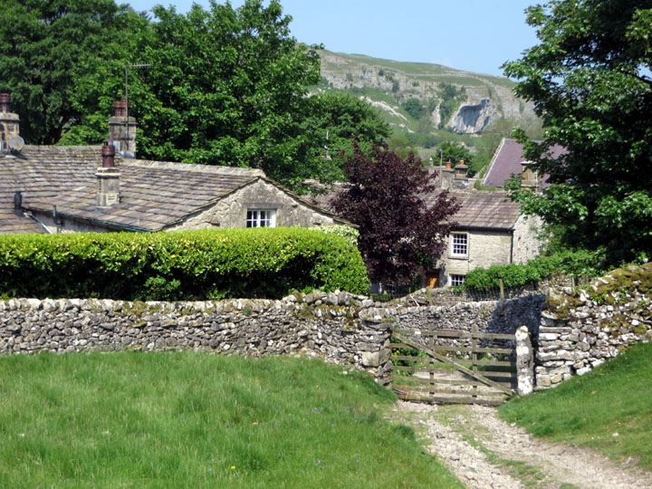
Coming closer to Kilnsey Crag we could see
the climbers on it. Small wonder they were there -- this was a pleasant sunny Sunday
afternoon.
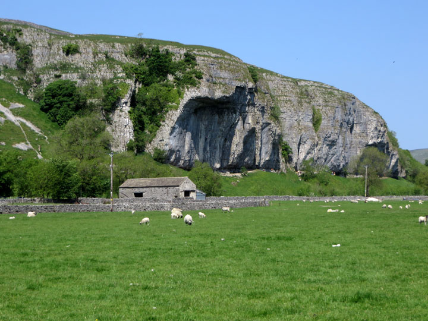
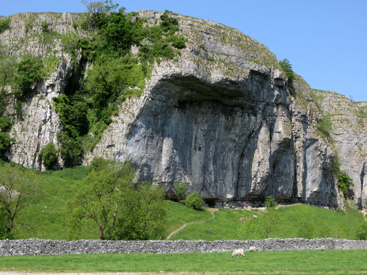
The walking continued to be superb.
During the afternoon we could see on our right Birks Fell, which we
would be crossing at the end of the day.
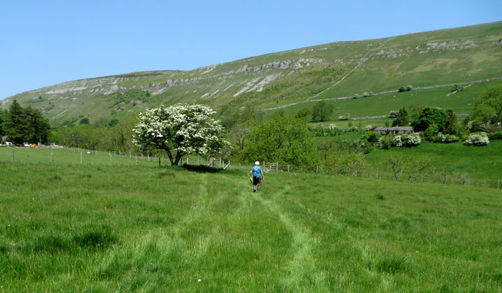
Up Birks Fell!
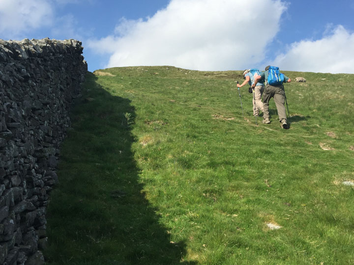
When we finally started dropping down we could see the village of
Buckden far below.
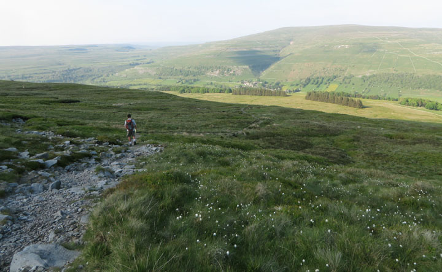
Half an hour later, and Buckden looks nearer:
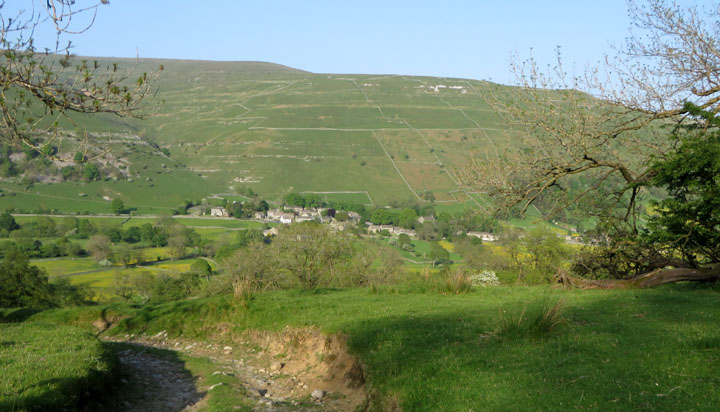
We happily found our pretty B&B, West
Winds.
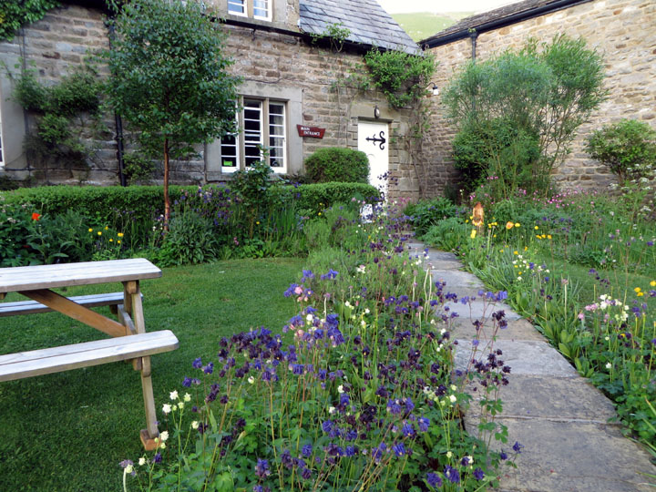
Home **
Next Day